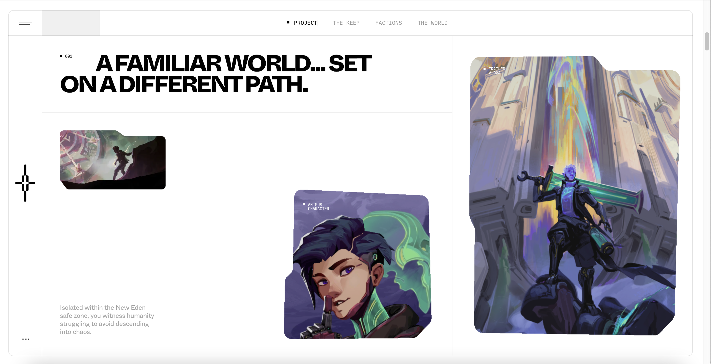
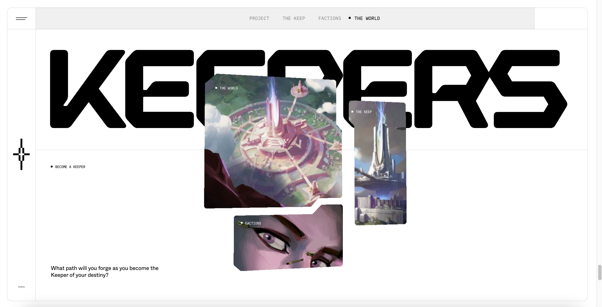

Date: 1/10/23
Here's my first post

Date: 1/16/23
I visited a few websites from the awwwards.com site and the one that caught my eyes the most is kprverse.com
What I really like about this site is how immersive the "scroll transition" is. I think the website really does a good job of keeping a clean minimal layout, yet at the same time making the site feeling very full because of the interactive transition. My screenshots don't quite do the justtice of how amazing this site works but here are some screenshots of the website!
 By look through this site it makes me think about how I can use image frames to draw attention. I also noticed the way the clickable words subtle change when you hover your mouse over. I learned that you don't have to make your words big in order to tell people that this is click able. Because users have used many websites, they just know that words that move or change are usually clickable. Also, the placement of the clickable words subtlely hints if they are clickable. In my project, I also would want to have my clickable words/buttons just subtlely change when hovered.